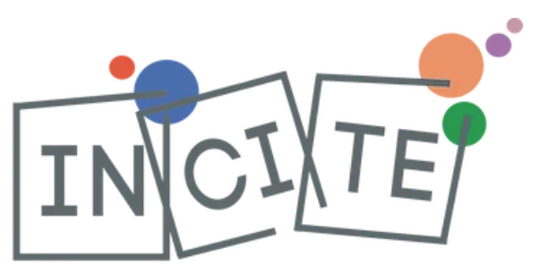

Cientistas e divulgação científica
Opiniões e práticas de 1.934 bolsistas de Produtividade em Pesquisa do CNPq
Este site apresenta os resultados de um survey com bolsistas de Produtividade em Pesquisa (PQ) do CNPq sobre suas percepções e atividades de divulgação científica.
respostas, coletadas entre janeiro e março de 2023 — cerca de 12% da população de bolsistas PQ na época. São cruzamentos pré-calculados, distribuídos por cinco seções.
Se você quer a leitura em vez dos dados, comece pelo resumo dos resultados.
Esta pesquisa foi realizada com o objetivo de compreender as percepções e opiniões dos cientistas brasileiros em relação à divulgação científica. Especificamente, convidamos para participar os bolsistas de produtividade em pesquisa (PQ) do Conselho Nacional de Desenvolvimento Científico e Tecnológico (CNPq), uma população conhecida por sua alta atividade na produção científica.
A coleta de informações foi feita a partir de um questionário online autoaplicado, que continha 51 perguntas organizadas em sete seções, abordando desde temas de interesse e hábitos culturais até atividades de divulgação científica e opiniões sobre ciência e tecnologia na sociedade.
A coleta foi realizada entre janeiro e março de 2023. No total, foram coletadas respostas, o que significa cerca de 12% da população de bolsistas PQ na época. A amostragem foi feita de forma estratificada, garantindo que a distribuição dos respondentes fosse proporcional à distribuição dos bolsistas PQ por área de conhecimento, sexo, região geográfica e categoria da bolsa PQ.
Os detalhes de ponderação, correção para testes múltiplos e limites de interpretação estão na nota metodológica.
Para saber mais
Pereira, M., Castelfranchi, Y., & Massarani, L. (2024). Científicos brasileños y divulgación científica: Una propuesta de clasificación. Revista Iberoamericana de Ciencia, Tecnología y Sociedad — CTS. https://ojs.revistacts.net/index.php/CTS/article/view/779
Pereira, M. Ciência, sociedade, divulgação científica: a visão dos cientistas. 2023. 167 p. Dissertação de Mestrado em Sociologia — Universidade Federal de Minas Gerais, Belo Horizonte, 2023. http://hdl.handle.net/1843/55328
Os dados apresentados aqui são de perguntas selecionadas de cinco das sete seções do questionário original.
Baixar o questionário completo (PDF)
As cinco seções
| Seção | O que traz |
|---|---|
| Resultados | Resumo descritivo, e onde encontrar a interpretação revisada |
| Atividades de divulgação | O que os cientistas fizeram nos 12 meses anteriores, e a relação deles com a mídia |
| Opiniões sobre C&T | A ciência brasileira, riscos e benefícios, temas de preocupação, gestão da política |
| Opiniões sobre divulgação | Modelos de comunicação, importância atribuída, públicos prioritários |
| Motivações e obstáculos | O que empurra, o que trava, e a formação em divulgação |
| Perfil sociodemográfico | Quem respondeu, e como as características se cruzam |
Quase todo cruzamento deste site é apresentado como um gráfico de mosaico colorido por resíduos de Pearson. Vale entender como se lê.
Um gráfico de mosaico representa a relação entre duas variáveis categóricas dividindo um retângulo em áreas proporcionais às frequências.
- A largura de cada faixa vertical é proporcional a quantas pessoas estão naquela categoria da variável sociodemográfica.
- A altura de cada bloco, dentro da faixa, é a proporção daquela resposta entre as pessoas daquela faixa.
- Se as duas variáveis fossem independentes, todas as faixas teriam a mesma divisão horizontal. É o desalinhamento entre elas que mostra a associação.
As cores: resíduos de Pearson
O resíduo de Pearson de uma célula é (observado − esperado) ÷ √esperado, onde esperado é a contagem que haveria se não houvesse nenhuma associação.
- Vermelho: a combinação ocorre mais do que o esperado.
- Azul: ocorre menos do que o esperado.
- Cinza claro: resíduo entre − e +, desvio pequeno demais para ser destacado.
A escala vai de − a + e é a mesma em todos os gráficos do site, então um vermelho forte em uma página significa a mesma coisa que em outra.
Um exemplo
Grande área é a dimensão que mais diferencia os cientistas em todo o survey. Aqui, quem está em Ciências Exatas e da Terra participa de eventos em ONGs e movimentos sociais bem menos do que o esperado — o bloco “Nenhuma vez” é vermelho forte —, enquanto Ciências Humanas e Sociais Aplicadas mostram o padrão inverso. Ainda assim, o V de Cramér é 0,15: a associação é real, e modesta.
E o valor de p?
Acima de cada gráfico aparecem três números, e vale entender o papel de cada um:
- O valor de p responde apenas “esta associação é distinguível de zero?”. Com cerca de 1.500 respondentes por cruzamento, quase sempre a resposta é sim — então o p, sozinho, quase não discrimina. Ele é ajustado pelo método de Benjamini–Hochberg, porque cada bloco de perguntas realiza dezenas ou centenas de testes de uma vez e alguns sairiam “significativos” por puro acaso.
- O V de Cramér responde à pergunta que interessa: quão forte é a associação. Vai de 0 (nenhuma) a 1 (perfeita). Neste survey, as associações entre práticas de divulgação e perfil sociodemográfico ficam quase todas abaixo de 0,15 — reais, e pequenas.
- O n informa quantas pessoas responderam às duas perguntas do cruzamento. Quem deixou qualquer uma das duas em branco fica de fora.
Página do pesquisador: https://marcelo-pereira-pcst.github.io/
Perfil no ResearchGate
Código do site e do processamento: https://github.com/marcelo-pereira-pcst/dashboardpq
